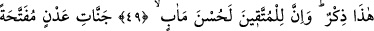
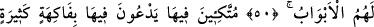
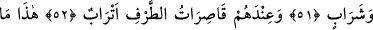
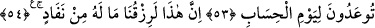
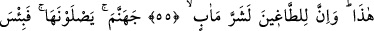
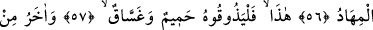
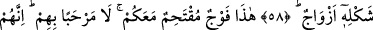
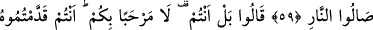
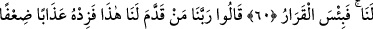
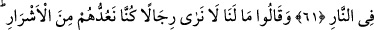
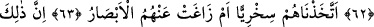
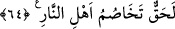
CEHENNEM EHLİNİN
TARTIŞMASI
49. İşte bu, bir hatırlatmadır. Doğrusu Allah’a karşı gelmekten sakınanlara güzel
bir gelecek vardır.
50. Kapıları yalnızca kendilerine açılmış Adn cennetleri vardır.
51. Onlar koltuklara yaslanıp kurularak orada birçok meyveler ve içecekler
isterler.
52. Yanlarında, eşlerinden başkasına bakmayan, kendilerine yaşıt güzeller vardır.
53. İşte, hesap günü için size vâdolunan şeyler bunlardır.
54. Şüphesiz bu, bizim verdiğimiz rızıktır. Ona bitmek ve tükenmek yoktur.
55. Bu böyle; ama azgınlara kötü bir gelecek vardır.
56. Onlar cehenneme girecekler. Orası ne kötü bir kalma yeridir.
57. İşte bu; kaynar su ve irindir. Onu tatsınlar.
58. Buna benzer daha türlü türlü başkaları da vardır.
59. (İnkârcıların reislerine:) İşte bu sizinle beraber cehenneme girecek
topluluktur (denildiğinde, reisler:) Onlar rahat yüzü görmesin (derler). Onlar
mutlaka ateşe gireceklerdir.